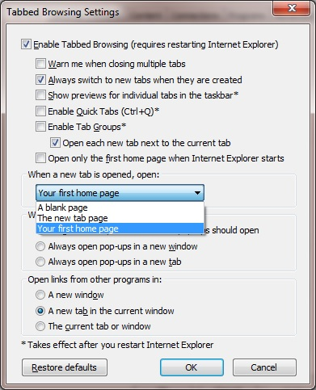

1. Click the Tools button [ALT + X], and then click Internet Options.
2. Click the General tab, look for a Tabs setting.
3. In the Tabbed Browsing Settings dialog box, in the When a new tab is opened, open list, click Your first home page, click OK, and then click OK again.
